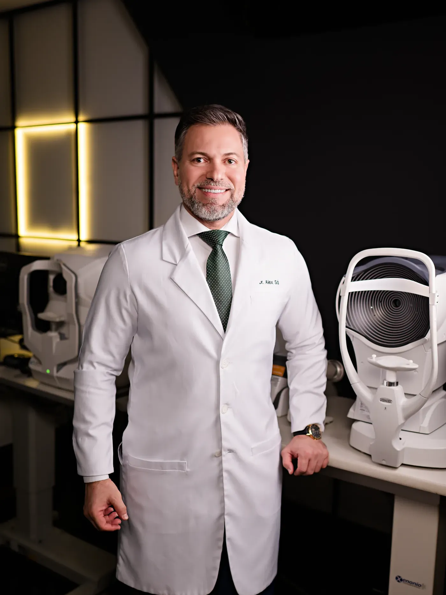
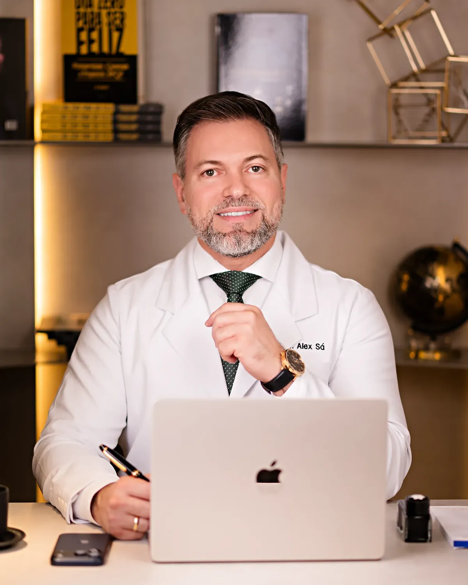
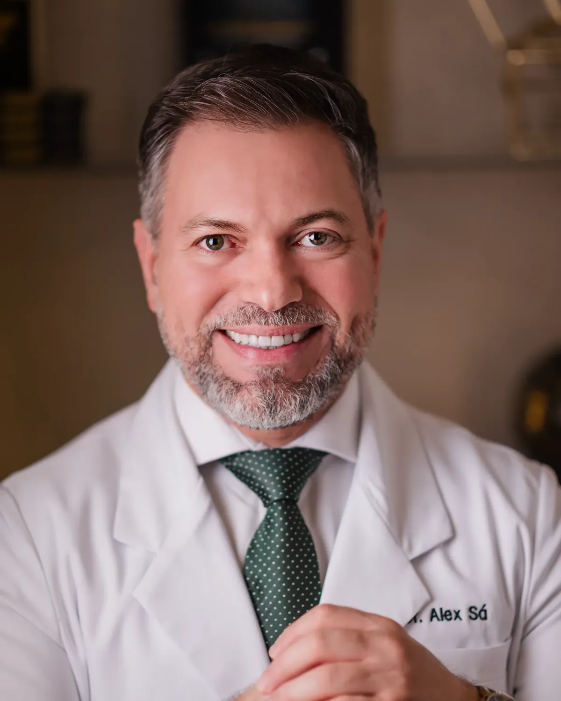
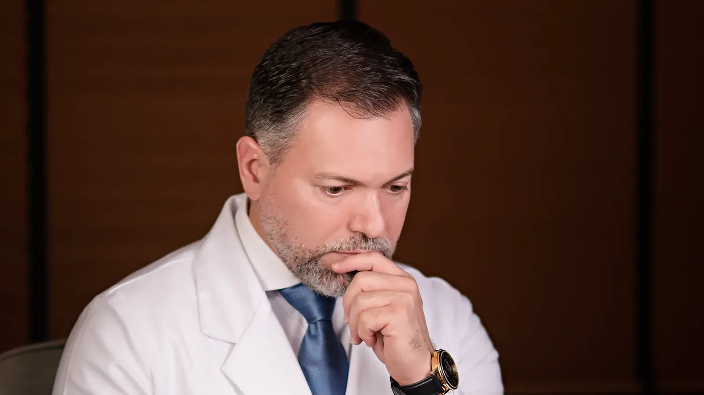

Quem quer sair do básico e entrar no mercado premium
Depender de convênio limita a evolução. Você aprende o caminho para captar paciente particular e oferecer procedimentos de alto valor, sem se submeter a margens adversas.

Mentoria presencial hands-on
Três dias e 30 horas dentro da clínica do Dr. Alex Sá, em Manaus: indicação, cálculo, cirurgia e negócio.
03 a 05 de dezembro · turma de 10, 4 vagas preenchidas · entrada por aplicação
Não é uma mentoria comum. São três dias ao lado do Dr. Alex Sá, dentro da clínica dele, em Manaus: você vê a estrutura, os bastidores, os processos internos e o atendimento que sustentam um consultório premium.
Aqui você não apenas aprende. Você experimenta, aplica e executa: indica, calcula, entra em ambiente cirúrgico e conduz o caso com o mentor ao lado.
É o passo de quem quer sair da teoria e entrar para a elite da oftalmologia premium, com a técnica e o negócio tratados na mesma imersão.

Profissionais que querem ir além do básico e dominar todas as etapas: da escolha da lente à cirurgia, da gestão do consultório à atração de pacientes particulares.
Depender de convênio limita a evolução. Você aprende o caminho para captar paciente particular e oferecer procedimentos de alto valor, sem se submeter a margens adversas.
Implantar não é só técnica: envolve precisão na indicação, cálculo correto, domínio dos equipamentos de diagnóstico e manejo cirúrgico seguro. Você assume o controle do processo inteiro.
Uma clínica oftalmológica é um negócio e exige estratégia, posicionamento e gestão. Você aprende a desenhar um fluxo previsível de novos pacientes para a sua realidade.
A vivência
A vivência acontece em ambiente clínico e cirúrgico, organizada de forma individualizada, com acompanhamento direto do mentor.
Estrutura, bastidores e processos de uma clínica montada para alto faturamento.
Como transformar a consulta em experiência premium e fidelizar paciente de alto valor.
Dos fluxos internos à estratégia financeira e comercial que sustenta o crescimento.
Você opera e implanta lentes de alta tecnologia com o Dr. Alex Sá ao lado, conforme o protocolo e a organização do mentor.
A lente ideal para cada caso, com as fórmulas biométricas mais avançadas e ferramentas próprias, como a Oftalmofix.
Os equipamentos essenciais de análise e a leitura que sustenta a decisão cirúrgica.
O que fazer quando a lente roda: como corrigir o desalinhamento e recuperar o resultado.
Preparo e inserção da lente no cartucho e os parâmetros premium de facoemulsificação.
Certificado de extensão universitária reconhecido pelo MEC ao final da imersão.
Quatro pilares sustentam a imersão. Três constroem o negócio, um constrói o resultado cirúrgico.
Sua carreira como negócio estratégico e escalável, vista de dentro da rotina de um consultório premium.
O que atrai paciente particular: posicionamento, autoridade digital e demanda real pelas suas cirurgias de lentes de alta tecnologia.
Precificação, controle de custos e fluxo financeiro previsível. A independência dos convênios começa aqui.
O pilar técnico e clínico: escolha, indicação e implante das lentes de alta tecnologia, com a técnica cirúrgica que sustenta resultado previsível. É o método que dá nome à mentoria.
Oftalmologistas falando sobre as mentorias do Dr. Alex Sá.
Quem conduz
Dr. Alex Sá (CRM-AM 7516 · RQE 3514) é cirurgião oftalmologista, especialista em catarata e cirurgia refrativa. Foi professor por 6 anos na Universidade Federal do Amazonas, preceptor de residência em oftalmologia e de fellowship em catarata, e é autor do livro "Cirurgia de Catarata: habilitando-se para o aprendizado".
Nascido no Rio de Janeiro, em uma família pobre, passou a infância no Morro do China e encontrou na educação o caminho para mudar a própria história. Hoje lidera a própria clínica em Manaus e mentora oftalmologistas de todo o Brasil no ecossistema OftalmoBlack.
É idealizador dos podcasts VitalCast 360 e Catarata Cast e inventor do Simulador Sapiens, criado para o aprendizado das cirurgias intraoculares.

Minha verdadeira virada de chave aconteceu quando atingi o ápice de uma clínica sólida, credenciada com praticamente todos os planos de saúde da cidade, incluindo o SUS. No entanto, apesar de todo o sucesso aparente, me encontrei exausto.
Hoje, meu faturamento não só cresceu exponencialmente, como também ganhei algo inestimável: qualidade de vida."
O investimento e as condições são apresentados direto pela equipe, na conversa que segue a sua aplicação. Sem checkout e sem compra por impulso: a entrada é por análise de perfil.
Aplicar agoraAplicação
03 a 05 de dezembro de 2026 · 10 vagas, 4 já preenchidas. A aplicação não é compromisso de compra. É o primeiro passo da conversa.
Você envia a aplicação com o seu momento em lentes de alta tecnologia.
A equipe retorna no WhatsApp para entender os seus objetivos.
Perfil alinhado, a sua vaga na turma de dezembro é reservada.
A sua aplicação foi aberta no WhatsApp da equipe. Confirme o envio da mensagem por lá e aguarde o retorno.
Prefere conversar antes? Falar no WhatsApp.
A imersão é para médicos oftalmologistas. Quem já opera refina indicação, cálculo e técnica com lentes de alta tecnologia; quem está estruturando a prática premium constrói base com acompanhamento direto do mentor. O seu momento é avaliado na aplicação.
São três dias presenciais, 30 horas no total, dentro da clínica do Dr. Alex Sá, em Manaus. Teoria e prática no mesmo ambiente: consultório, processos, indicação e cálculo de lentes e vivência em ambiente cirúrgico, com acompanhamento direto do mentor. A próxima turma acontece de 03 a 05 de dezembro de 2026; a agenda detalhada é apresentada pela equipe.
São 10 vagas por turma: é o que garante o mentor ao lado em cada etapa. Para a turma de dezembro, 4 vagas já estão preenchidas.
Sim. Ao final da imersão você recebe certificado de extensão universitária reconhecido pelo MEC.
Envie a aplicação nesta página ou chame a equipe no WhatsApp. O time retorna, entende o seu momento e apresenta as condições. A vaga é reservada depois dessa conversa.
Não. Passagem, hospedagem e alimentação ficam a cargo do participante. A equipe orienta sobre a logística na conversa de confirmação.

Envie a sua aplicação e converse com a equipe sobre a turma de 03 a 05 de dezembro da Mentoria Grau Zero.
Aplicar agora